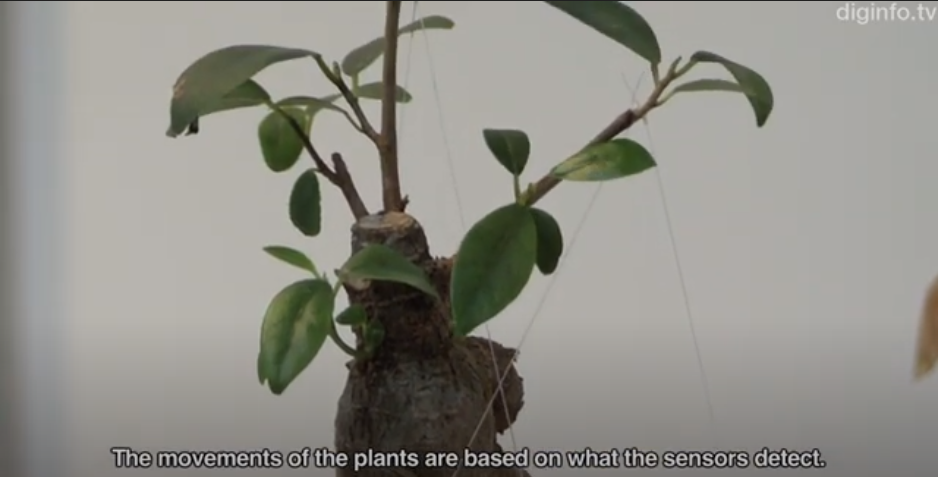
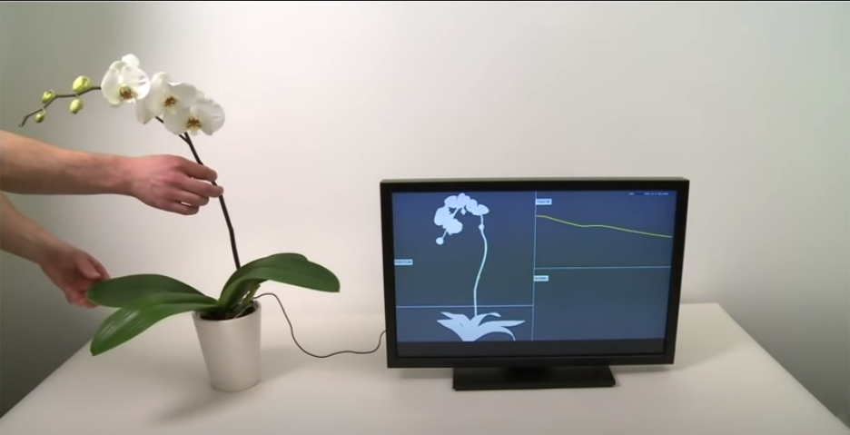

Botanical Printer: An Exploration on Interaction Design with Plantness is an exploration of interaction design with our response to natural and electronic climates. The study was done by Yuan-Yao Hsu, Wenn-Chieh, Wan-Chen Lee, and Rung-Huei Liang from the National Taiwan University of Science and Technology. The main goal of the study is to use plant-like artifacts to explore the relation between our perception and the agency of plants. The study also intentionally designs medium level agency into things and to speculate on “what a not-so-engaging interactive artifact” (Hsu et al 2018) could be. They built the Botanical Printer, which prints in response to accumulations of CO2 and Wi-Fi intensities. “When CO2 intensity in the environment is getting higher, the number of lighting LEDs increases and the printed content shows photos or posts from the users’ social media; conversely, the number of lighting LEDs decreases and the printed content tends to be fictional if CO2 intensity in the environment is getting lower” (Hsu et al 2018). They also made 36 Botanical cards, which are used to annotate a collection of six interaction design artifacts labeled as slow technology, calm technology, or poetic interaction. The participants of the study, which are two groups composed of two participants and the other two groups contained three participants, were first asked to associate one of the six artifacts and the cards. They are then asked to take these cards home and place them in their living environments according to each artifact’s characteristics. The participants were brought back for a short interview to collect their situated experiences with these artifacts. In conclusion of the study, plantness is not limited to some prescriptive expression of agency. The Botanical Printer works as an artifact which can be used to investigate degrees of plantness and the way its agency emerges in human-object encounters.
I think that the botanical printer serves its purpose as an artifact with a high level of plantness in fluid living space, which means that they need much less engagement from human and is blended into the background of our living space. The topic of plantness reminds me of an interactive plant that can “react and convey emotions” that was quite controversial from Keio University in Japan. The plant’s branches were pulled by strings that are controlled with microcontrollers and motors. The public did not like this project because of its lack of purpose. People were commenting that plants are already interactive in their own way, and that we should respect nature boundaries and implement that technology in useful devices. In this case, the plant is not interactive beyond the level of being manipulated by simple sensors. It does not offer a personalized experience. I think the project was also not welcomed due to its “stiffness”. The appearance of motors and strings are quite artificial to the eyes of the audience and it does not convey a fluid interactive experience.
Another project is Botanicus Interacticus. being developed at Disney Research by Ivan Poupyrev in collaboration with Philipp Schoessler, Jonas Loh (Studio NAND), and Munehiko Sato. A single wire placed anywhere in the plant soil to detect interactions. It can detect touch and grasp location, tracking proximity between human and a plant, and estimating the amount of touch contact when the viewer does an action as simple as sliding fingers on the stem of the plant. The motion of the plant appears to be natural and fluid. According to the creator, “from the point of view of our technology there is no difference between real and artificial” (Sato 2012). The purpose of this specific technology is to design highly interactive responsive environments based on plants, including creating organic ambient and pervasive interfaces. Some comments suggest that such technology using plantness can be used as a form of remote control system, such as a multitouch controller.
Bibliography
Hsu, Yuan-Yao. Wenn-Chieh, Wan-Chen Lee, and Rung-Huei Liang. “Botanical Printer: An Exploration on Interaction Design with Plantness”. Proceedings of the 2018 Designing Interactive Systems Conference. 2018.
Ikinamo.“Interactive plants reacts and convey emotions”. YouTube. 2012.
Sato, Munehiko. “Botanicus Interacticus: Interactive Plant Technology”. 2012. http://www.satomunehiko.com/works/botanicus-interacticus/